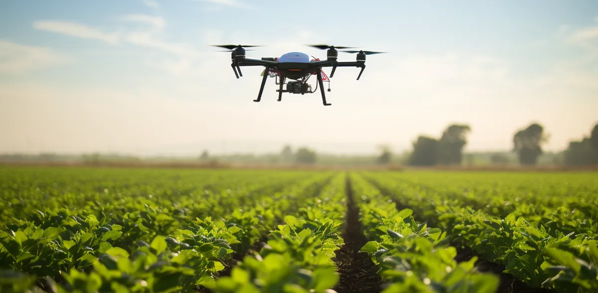
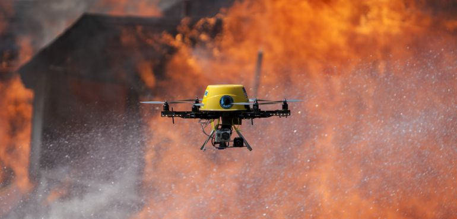
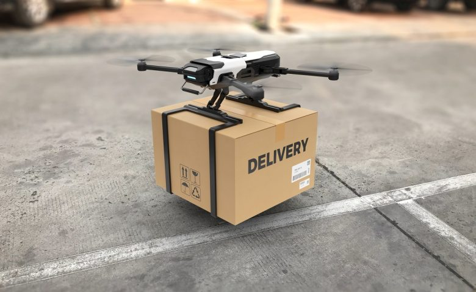

Lo más destacado:
- Los mejores drones para principiantes de
2024
- Las últimas noticias y novedades sobre
nuestros drones
- Consejos para volar tu dron de forma
segura
- Acceder a la información/fotos/vídeos
tomados con nuestros drones
Artículos:
-

Avance de los drones en la Agricultura
Los drones ya están transformando la agricultura. Equipados con sensores y cámaras, pueden analizar la salud de los cultivos, detectar plagas y enfermedades, y aplicar pesticidas y fertilizantes de manera precisa. Esto permite a los agricultores optimizar el uso de recursos, aumentar la productividad y reducir el impacto ambiental.
-

La vital ayuda de los drones con Incendios
Los drones pueden ser herramientas valiosas para combatir incendios forestales. Equipados con cámaras térmicas, pueden detectar puntos calientes y ayudar a los bomberos a identificar las zonas de mayor riesgo. También pueden usarse para transportar agua o retardante de fuego a zonas inaccesibles para los equipos terrestres.
-

Nuestros paquetes entraran por la ventana
La entrega de paquetes con drones es una tecnología emergente con un gran potencial. Los drones pueden realizar entregas rápidas y eficientes en zonas de difícil acceso, como áreas rurales o congestionadas. Además, son una alternativa más sostenible que los vehículos tradicionales, ya que no generan emisiones contaminantes.